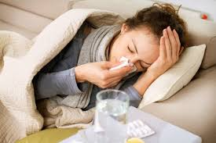

Pertussis, also known as whooping cough, has been grabbing headlines recently due to a sudden surge in cases. Increasing numbers have prompted outbreak declarations in some areas of the country. What is Pertussis? What measures can we take to prevent its spread?
According to the Department of Health (DOH), whooping cough, known as "ubong-dalahit" or "tuspirina" in Filipino, is a highly contagious respiratory infection caused by a type of bacteria called Bordetella pertussis.
As characterized by the World Health Organization (WHO), whooping cough spreads when an infected person sneezes or coughs, releasing bacteria-filled particles into the air. These particles can be inhaled by others nearby. Spending prolonged time together or sharing breathing space, like a marites session with someone infected, can also facilitate its transmission.
WHO describes pertussis symptoms as gradual, starting with mild fever, colds, and coughs about 7 to 10 days after exposure. In most cases develops into a hacking cough followed by whooping (hence the common name of whooping cough). People with pertussis are highly contagious, particularly within the first three weeks after the cough starts. It's worth noting that children who get infected often experience coughing spells lasting between 4 to 8 weeks.
While antibiotics can treat pertussis, prevention is key. Vaccination offers the best defense against this. The Philippine Information Agency reports that the disruptions in routine immunization during the pandemic are considered the main reason why, for the first ten weeks of 2024, there already are 453 reported cases of pertussis. The DOH prompts the public to follow the vaccinations against this highly contagious infection.
As of now, there are no reports of pertussis cases in Aklan. However, the fear of another contagious disease brings us back to the start of pandemic restrictions.
Three doses of the DTaP vaccine, the first dose at 2 months and the two next shots at four-week intervals provide immunity to pertussis (whooping cough). Children under 7 get DTaP, while older children and adults get Tdap. The Pentavalent or 5-in-1 vaccine (DTaP/IPV/Hib) protects against diphtheria, tetanus, pertussis, polio, and Hib with a single shot, starting in infancy.
It's best to stay home. If you must go out, wear a mask and maintain a safe distance, particularly around vulnerable individuals such as pregnant women, children, and those with compromised immune systems.
